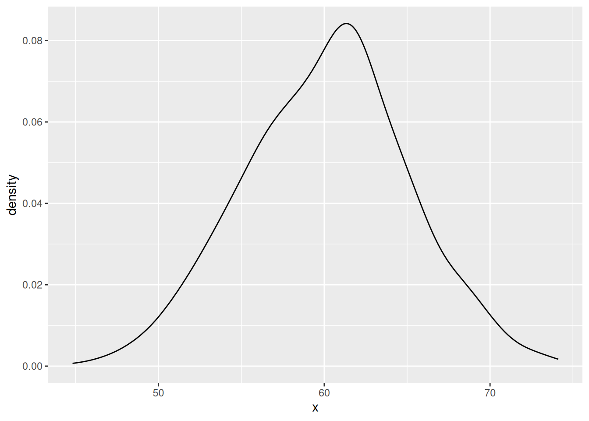
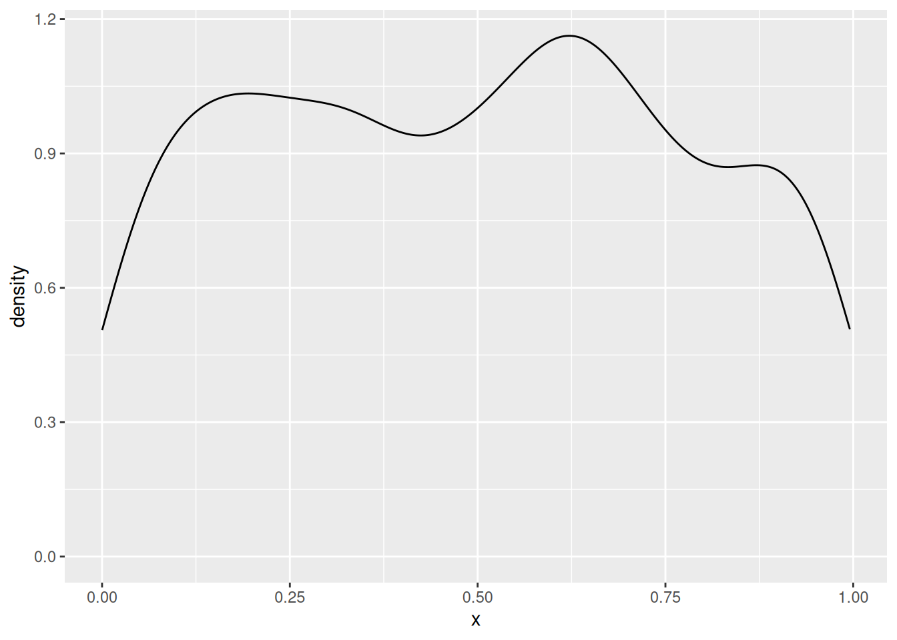
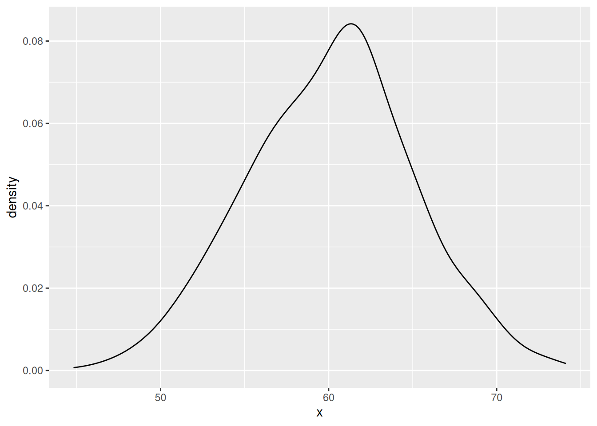
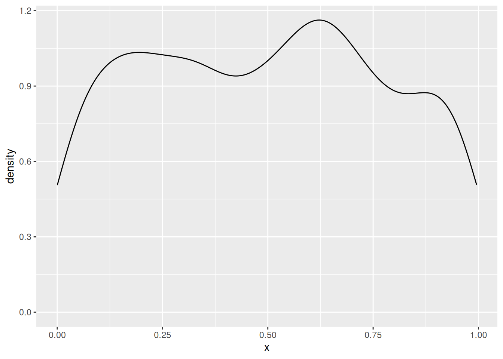
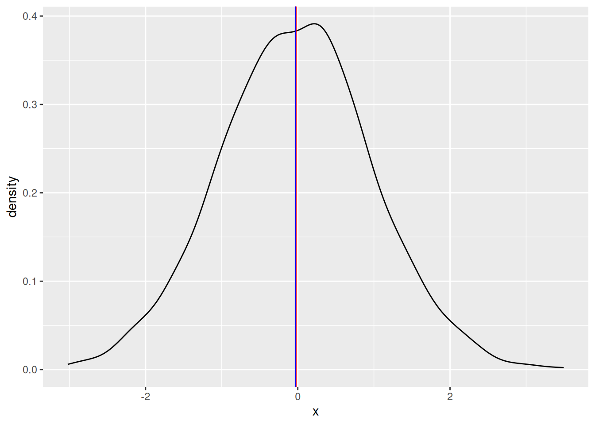

In this tutorial we will look at statistics used to describe or summarise characteristics of a variable such as its , central tendency (‘average’), dispersion, or distribution.
This tutorial should enable you to:
We’ve looked at a lot of different distributions graphically; how would you describe them in words? We can break it down a few characteristics:
As well as describing these characteristics in words, we can measure them numerically using a set of functions known collectively as summary statistics.
Another way of describing a distribution—a sort of shorthand—is to compare it to one of a number of mathematical probability distribution functions that are known to occur frequently in real-world data. The most prominent of these is the normal distribution:
The normal distribution is so named because it is what statisticians ‘normally’ expect to see when we measure a sample drawn randomly from a larger population. As such, many statistical tests in the classical hypotheses-testing framework assume that the variable or variables being tested are normally distributed – so it’s important to check that they are before running them! These tests are called parametric; tests that don’t assume normality are non-parametric.
Arguably more common in archaeostatistics is the log normal distribution:
Compared to the normal distribution, a log normal distribution is skewed towards smaller values (it is asymmetric). Another important difference is that the values in a log normal distribution cannot be negative – much like many ‘real world’ values archaeologists measure. It is called log-normal because it is the logarithm of the normal distribution. This is handy because it means that, if you encounter a log normal distribution, you can easily transform it into a normal distribution and so use parametric tests.
Statisticians have described many, many other distribution functions. Fitting empirical variables to theoretical distributions becomes important in statistical modelling, under both the classical hypothesis-testing and the Bayesian framework. For now, just be on the look out for normal and not-normal distributions, as this has a more immediate effect on exploratory statistics.


The central tendency or average of a variable is a measure of its ‘typical’ value or, in geometric terms, the midpoint of its distribution. The most usual measures of central tendency are the mean and the median.
The arithmetic mean of a variable is the sum of its values divided by the number of values.
We have already seen how to calculate the mean of a vector in R using the function sum():
x <- sample(1:1000, 100) # Sample 100 random numbers in the range 1:1000
sum(x) / 100R considers anything that comes after a # character to be a comment and does not try to interpret it as code. You can write anything you like as a comment; programmers often use them to explain lines of code that are not immediately obvious, to document how functions or scripts are intended to be used, or to leave notes for themselves and otherwise. Since they have no effect, you don’t need to copy comments when you are running the examples given here.
Or if we don’t know how many values there are in advance, we can use the function length() to count how many elements there are in the vector:
sum(x) / length(x)Alternatively, we can just use the function mean(), which does the same thing:
mean(x)If x contains NA values, we need to make sure to set the na.rm argument of mean():
x[1] <- NA # Replace the first value of with NA
mean(x)
mean(x, na.rm = TRUE)The same is true of all the other statistical summary functions we will use in this tutorial.
The median is the central value of a variable, if you put that variable in its numerical sequence. It also has a convenient function in R, median():
x <- sample(1:1000, 100)
median(x)The choice of median or mode is largely determined by the shape of the distribution. If it is symmetrical (like the normal distribution), the mean is usually the best choice as it gives the most precise measurement. But with skewed distributions (like the log normal distribution), the median tends to be closer to the central tendency. The median is also less sensitive to outliers than the mean.
A good practice is to visualise. By plotting the distribution, mean and median, we can see which looks more representative. For example, for a normal distribution (red = mean, blue = median):
library(ggplot2)
df <- data.frame(x = rnorm(1000))
ggplot(df, aes(x)) +
geom_density() +
geom_vline(aes(xintercept = mean(x)), colour = "red") +
geom_vline(aes(xintercept = median(x)), colour = "blue")
And for a log-normal distribution:
library(ggplot2)
df <- data.frame(x = rlnorm(1000))
ggplot(df, aes(x)) +
geom_density() +
geom_vline(aes(xintercept = mean(x)), colour = "red") +
geom_vline(aes(xintercept = median(x)), colour = "blue")islay::islay_lithics)x without using the median() functionDispersion is the degree to which values of a variable vary from the central tendency. The simplest measure of the dispersion of a variable is its range, i.e. its highest and lowest values:
range(x)A simple range is obviously extremely sensitive to outliers. To mitigate this, it is more common to consider the range between quantiles – subsets of the data that exclude the extreme values. We can use the quantile() function to calculate quantiles. By default, it returns the quartiles (quarter-subsets) of the data:
quantile(x)But this can be customised with the probs argument:
quantile(x, probs = seq(from = 0, to = 1, by = 0.1)) # tenth quantilesThe interquartile range is particularly commonly used. To calculate this, we simply take the different between the upper (75%) and lower(25%) quantiles:
diff(quantile(x, probs = c(0.25, 0.75)))Outliers are anomalously large or small values, i.e. they lie on the far ends of its distribution. Though they occur ‘naturally’ in almost all real data, it is generally assumed that they are not representative of the phenomenon we’re trying to measure. Extreme outliers can cause problems for statistical analyses, though some statistics and tests are more ‘sensitive to outliers’ than others. There is no objective, statistical way to determine what is and isn’t an outlier. Identifying and (potentially) removing them is always a combination of exploratory analysis (spotting large or small values) and your own knowledge expertise of the data (spotting whether these values are ‘real’ or not).
Alternatively, we can use the standard deviation to summarise the dispersion of a dataset with a single number. The equation for this is a bit more complicated (see Shennan 1998 for details), but it is easily calculated in R:
sd(x)The standard deviation is widely used because it is easy to calculate, robust to outliers, and expressed in terms of distance to the mean (so it can be used to compare distributions with different central tendencies). A useful rule of thumb for interpreting the standard deviation is the 68–95–99.7 rule. This states that, if the variable is normally distributed:
Base R doesn’t have a lot of functions for summarising shape, so we will need to install and use the moments package:
# install.packages("moments")
library("moments")Skew describes whether or not a variable has a symmetrical distribution. A distribution ‘leaning’ towards the left on a graph is negatively skewed; to the right positively skewed.
We can measure skew using the skewness() function from moments:
skewness(x)Kurtosis is the degree to which the distribution of a variable is ‘stretched out’. A variable with positive kurtosis might be described as having a ‘high peak’ and a ‘long tail’; with negative kurtosis, a ‘flat top’ or hill-shape.
There are two functions for measuring kurtosis in the moments package:
kurtosis(x) # Pearson's measure of kurtosis
geary(x) # Geary's measure of kurtosisA final important shape characteristic is multimodality. So far, we’ve only worked with unimodal variables – distributed around a single central tendency. But it is not uncommon to see bimodal variables, with two distinct peaks, or multimodal variables, with three or more. At this point most of the statistics we calculated above will not be meaningful, and you have to investigate various techniques for decomposing the data into multiple, unimodal variables.